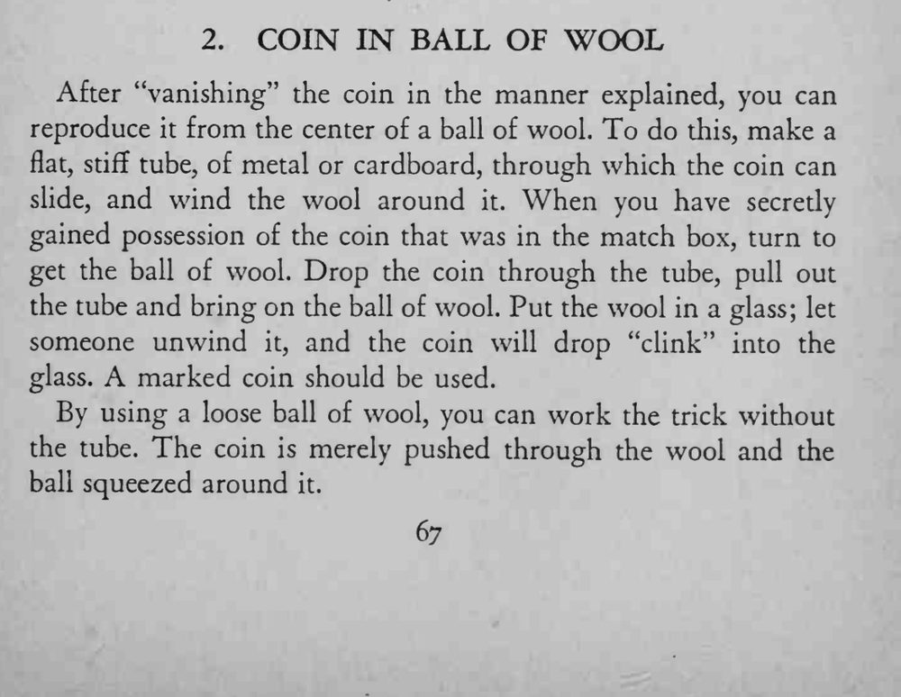

刚才从火柴盒里消失的硬币，最后从一团羊毛球中间被拆出来，当啷一声落进玻璃杯。
要用做过记号的硬币；若用松散的羊毛球，也可以直接把硬币塞进羊毛再揉紧，不必用筒。

After "vanishing" the coin in the manner explained, you can reproduce it from the center of a ball of wool. To do this, make a flat, stiff tube, of metal or cardboard, through which the coin can slide, and wind the wool around it. When you have secredy gained possession of the coin that was in the match box, turn to get the ball of wool. Drop the coin through the tube, pull out the tube and bring on the ball of wool. Put the wool in a glass; let someone unwind it, and the coin will drop "clink" into the glass. A marked coin should be used. By using a loose ball of wool, you can work the trick without the tube. The coin is merely pushed through the wool and the ball squeezed around it.